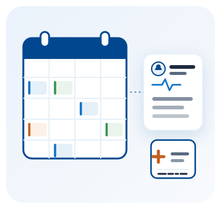

Gestión Clínica
La agenda, la historia clínica y las recetas de tu consultorio en un solo lugar, sin carpetas ni cuadernos.

Del turno a la receta, sin volver a escribir lo mismo
Agendas la cita, la abres el día de la consulta y desde ahí escribes lo que pasó, dejas el diagnóstico y emites la receta. El paciente ya está cargado, así que no vuelves a preguntarle la cédula en cada paso. Y cuando toca cobrar, la factura se abre con él ya elegido como cliente.
La facturación electrónica viene incluida, con nuestro sistema ya autorizado ante el SRI.
Todo esto, en los tres planes
- Agenda semanal por profesional, con los horarios que tú defines
- Estados de la cita: agendada, confirmada, atendida o no se presentó
- Tasa de confirmación y de ausencias, a la vista en la misma agenda
- Recordatorio automático por correo, la tarde anterior a la cita
- Ficha del paciente con antecedentes, alergias, tipo de sangre y contacto de emergencia
- Historia clínica en formato SOAP, con signos vitales
- Diagnósticos codificados con CIE-10
- Adjuntos en la consulta: resultados de laboratorio o fotografías, en PDF o imagen
- Recetas en PDF con numeración y código de verificación, listas para imprimir o enviar por correo
- Certificados médicos de reposo con lo que se exige para justificarlos: la contingencia, el diagnóstico y los días en números y en letras
- Órdenes de exámenes para llevar al laboratorio, con el diagnóstico ya impreso
- La historia completa de un paciente en una sola pantalla, y su exportación en PDF cuando te la pida
- Informes: diagnósticos más frecuentes, citas por profesional y cuánta agenda se llenó
- Facturación electrónica incluida: emites la factura de la consulta desde el sistema, con el paciente ya elegido como cliente
- Pacientes sin límite, en los tres planes
- Acceso desde computadora, tablet o celular
¿Por qué llevarlo con SysDevUp?
La agenda primero
Ves tu semana completa y agendas pulsando un hueco libre. Los tramos fuera de tu horario ni se ofrecen.
La historia completa
Una consulta no se borra nunca. Se corrige mientras está abierta y después se enmienda con otra, así el historial queda entero.
Recetas como pide la norma
Con tu registro profesional, el diagnóstico y cada medicamento con su dosis, vía, frecuencia y duración.
Con acompañamiento
Te ayudamos a arrancar: cargar tus horarios, tus primeros pacientes y dejar la agenda andando.
Planes de Gestión Clínica
Los tres planes tienen las mismas funciones. Lo que cambia es cuántos profesionales atienden y cuántas citas puedes agendar al mes. Los pacientes nunca tienen tope.
Estos planes se cobran por mes e incluyen la facturación electrónica. El control de inventarios es aparte y se cobra por año.
Consultorio
Para el profesional que atiende solo
$39,99 /mes
1 profesional · hasta 200 citas al mes
- Agenda, pacientes e historia clínica
- Recetas en PDF y por correo
- Certificados y órdenes de exámenes
- Facturación electrónica incluida
- Informes de tu consulta
- Recordatorio de la cita por correo
- Pacientes sin límite
- Adjuntos en cada consulta
Clínica
Para consultorios con varios profesionales
$79,99 /mes
Hasta 4 profesionales · 700 citas al mes
- Todo lo del plan Consultorio
- Agenda independiente para cada profesional
- Cada uno con su especialidad y su horario
- Tres veces y media más citas al mes
Centro
Para centros médicos con varias especialidades
$169,99 /mes
Hasta 12 profesionales · 2.000 citas al mes
- Todo lo del plan Clínica
- Tres veces más profesionales
- Para centros con varias especialidades
- ¿Más de 12 profesionales? Lo conversamos
¿No sabes cuántas citas atiendes al mes? Escríbenos por WhatsApp: lo revisamos contigo y te decimos con qué plan te alcanza. Si atiendes solo, casi siempre es el de Consultorio.
Preguntas frecuentes sobre Gestión Clínica
¿La facturación electrónica está incluida?
No necesitas contratarla aparte: viene incluida en los tres planes. Desde la consulta abres la factura con el paciente ya elegido como cliente, sin volver a cargar sus datos. Lo único que tienes que conseguir por tu cuenta es la firma electrónica, que es personal y la emite una entidad certificadora.
¿Este plan se cobra por mes o por año?
Por mes, con la facturación electrónica ya incluida. El control de inventarios es aparte y se cobra por año.
¿Cuántos pacientes puedo tener?
Los que necesites. No hay tope de pacientes en ningún plan. Lo que cambia entre planes es cuántos profesionales atienden y cuántas citas puedes agendar al mes.
¿Se puede borrar una historia clínica?
No, y es a propósito. Una consulta se corrige mientras está abierta; una vez cerrada queda firme y se enmienda registrando otra consulta. Así el historial del paciente queda completo, que es lo que protege al paciente y al profesional.
¿El recordatorio de la cita llega por WhatsApp?
Hoy llega por correo, automáticamente la tarde anterior a la cita. El aviso por WhatsApp está en preparación.
¿Qué lleva la receta que imprime el sistema?
Lo que pide la norma ecuatoriana: tus datos con cédula y registro profesional, la fecha, los datos del paciente, el diagnóstico, y de cada medicamento el nombre genérico, la dosis, la vía, la frecuencia y la duración, además de la numeración y un código de verificación.
¿Traen el catálogo CIE-10 completo?
El sistema viene con los códigos más usados en consulta general, listos para usar desde el primer día. Si tu especialidad necesita otros, o quieres el listado oficial completo, lo cargamos nosotros sin costo.
¿Hay portal para que el paciente vea su historial?
Todavía no. Hoy la historia clínica la consulta el profesional desde el sistema, y las recetas y resultados se le envían al paciente por correo.